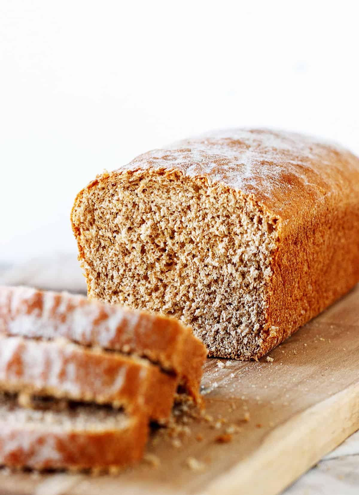

Easy Whole Wheat Bread

Description: Bread made of only pure whole wheat flour with the simplest ingredients and the simplest directions.
Ingredients:
- Yeast
- Whole Wheat Flour
- Oil
- Honey
- Liquid
- Salt
Steps:
- Sponge: you simply need to mix some of the flour, a little honey, the yeast and liquid to make a shaggy, wet mixture.
- The dough: the sponge gets the yeast going and then you add the rest of the ingredients to it. One after the other as specified in the recipe card (at the end of the post). Then it's a matter of mixing first, until it's thick and you can't incorporate any more flour with the spoon, and then kneading.
- By hand: you need about 10 minutes and some arm muscle. Doughs with only whole wheat flour, even if it's superfine, are heavier to knead than regular white bread.
- Stand mixer: this is a great way to make bread often if you don't want to knead by hand. Simply use the dough hook for about 7-8 minutes at medium speed. The dough will form a ball and leave the sides of the bowl.
- When is the dough ready: this is the trickiest part of most bread making recipes that use yeast. As usual, practice makes perfect, but in the meantime, you have to make sure the dough is not dry (see image 7, below). That dough needs a little more water, a tablespoon or two, before being ready to rest and proof.
- Proofing the dough: this is the part were you put it in a bowl and let it double in size. It allows the dough to rest and the yeast to do its thing. After it's doubled, you have to punch it down (image 8) to allow the gas that formed to escape.
- Make a rectangle the width of the pan you're going to use.
- Start rolling it from the long side, similar to when making cinnamon rolls. Make sure to seal it before making the next roll. This will prevent air bubbles from forming as much as possible during baking and creating holes in the crumb.
- Cover the bottom of the pan with oats, polenta, or some extra whole wheat flour. This will prevent it from sticking.
- After you place it in the pan, press it down with your hand (image 11). This will help in making the loaf as even as possible.
- Yeast: if the sponge doesn't bubble and/or puff up in some way, that means that it's not working, so don't go ahead with the rest of the recipe because the bread will not rise. Buy new yeast and start again.
- Resting time: it's important to let the yeast do its job and double the size of the bread dough. The place where you put the bowl has to be tempered, that is mild temperature. If it's too hot it will rise too quickly and if it's too cold will not rise as much as it should. Both situations are not good. I sometimes put it inside the turned-off microwave or wrap the bowl in a blanket or sweater (yes I do) when the kitchen is too cold.
- Kneading: make sure the dough is kneaded until soft and smooth, yet slightly sticky. This is fine because after the first rise it will lose most of its stickiness. Make sure you knead 10 minutes by hand or about 8 minutes in the stand mixer because the gluten needs to develop for the bread to rise as it should.
- Storing: this bread keeps well for a week in the refrigerator and for a month in the freezer. In both cases make sure it's well wrapped so that it doesn't dry out quickly. If freezing, I highly recommend slicing it first. That way you can make fresh toast whenever you want. Otherwise, you will have to defrost the whole bread.